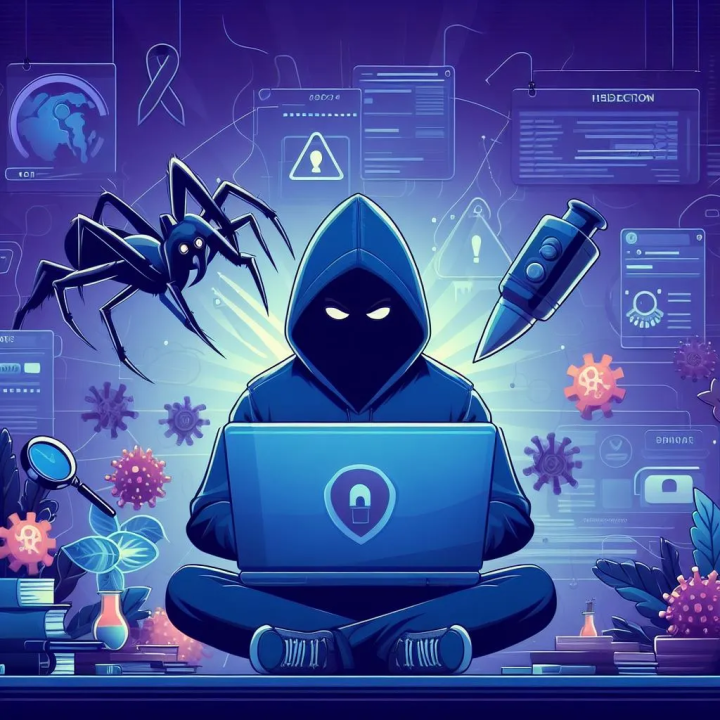

Botnet Part 1

For today’s video, I will be going over how to write the backdoor CLIENT script LIVE!
Botnet Part 2
For today’s video, I will be going over how to write the backdoor SERVER script LIVE!
Hello Arduino

For today’s video, I will be going over how to write the source code for your LED light bulb!
Hello Arduino 2

For today’s video, I will be going over how to install and setup the Arduino IDE.
TCPLab

Today’s demonstration will be a lab exercise to get some hands on practice.